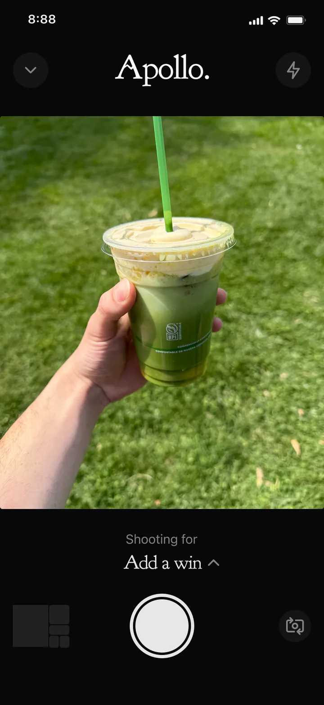
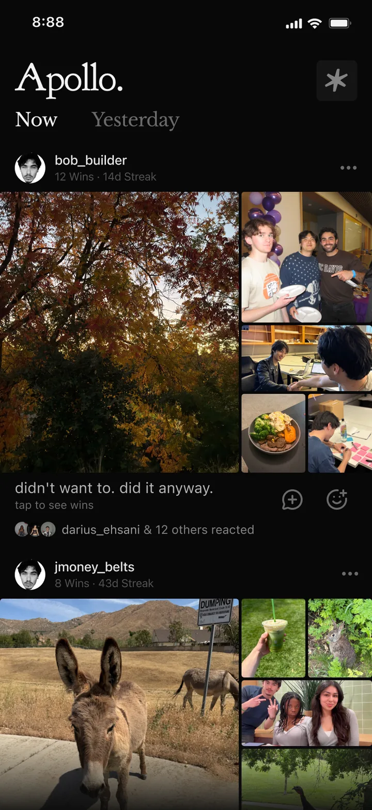
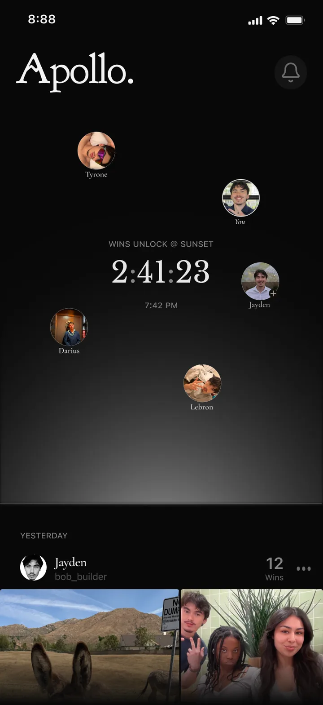
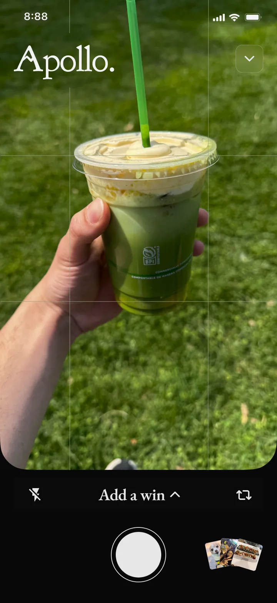
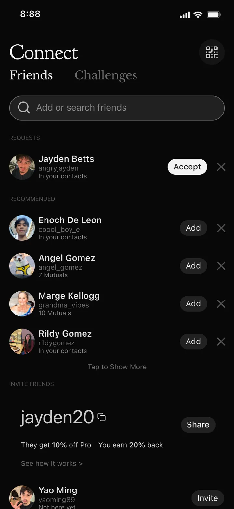
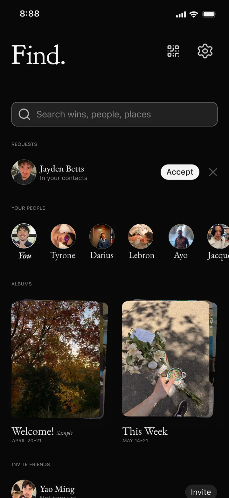

ApolloAn ADHD-native social app with no streaks, no counts, and no color.

- Role
- Founder & product designer
- Scope
- All 58 screens, designed solo
- Timeline
- 1-day hackathon + ongoing updates
- Year
- 2026
Apollo is a social app that makes the invisible visible. You capture your daily wins, big or small, and they become a gorgeous post your close friends witness. It is designed from the ground up for the way ADHD brains actually work: no streaks, no shame, no doomscroll. Apollo is my company, and I designed every one of its 58 screens.
Small wins are the whole game.
Apollo grew straight out of Strata. Designing that gamified habit builder, I realized “habit” had become a buzzword, one that sounded good but never translated into quality. So I went looking for something sharper, and found it in winning. A Harvard study by Teresa Amabile, built on nearly 12,000 daily diaries, found the single biggest driver of motivation and emotion in a day is making progress in meaningful work, even a small step. Small wins aren’t a nice-to-have. They’re the whole game.
This one is personal. I have ADHD, and I have always seen it as a superpower: it lets me lock in completely on what I love, and fuels a drive most people don’t have. But the hardest part of building anything is the middle, the slow stretch between starting and finishing, where the reward feels furthest away. My friends swear they’ll be jacked in a couple months and mean it, but results never come overnight, and all the quiet showing-up in between goes unseen. Apollo makes that middle visible, and worth staying in. For a lot of people, the stakes run higher than a missed month at the gym.
Everyone wanted it to be social.
While building Strata, I ran 30 user interviews, and one request kept surfacing: a social layer, a way to stack wins together. That stuck with me, because I feel it myself, I love posting just to watch how my friends react, and most of us already share stories all day. Apollo gives that instinct an intentional home: one place, made only for your wins.
The deeper bet is that witnessing beats willpower. When you watch your friends show up, showing up becomes contagious, and being seen doing the work makes you want to keep going, for the people watching as much as for yourself. No streak counter can do that.
The camera captures the feeling, not the angle.
The whole app is one loop. You capture a win with Apollo’s own camera, and your wins come together into a single beautiful post, a mosaic of your day, that friends witness and react to. Over time it becomes a journal of who you were becoming, one day at a time.
I kept the camera restrained on purpose. Apollo is a close-friends app, and it has to breed authenticity throughout. A camera roll means uploading your most posed, best-angle shot, but a win is about the feeling, not the perfect frame. So you shoot in the moment, with rule-of-thirds guides and framing help so it still looks its best. The instant you log a win, you feel it: this photo is going to become something gorgeous, for you and the people watching.
The screens in these flows, the camera and the core app, began at a 24-hour hackathon where I designed the first version of Apollo end to end in a single day. I’ve kept pushing every one of them further since.
The camera is the screen I’m proudest of. The latest pass makes capturing a win effortless, a couple taps and you’re done.

North gives. It never nags.
One more piece makes the loop feel personal. North is a small AI companion built into Apollo, the closest thing to a coach for your wins. Each day it looks at what you’ve captured and reflects it back: the patterns it notices, the progress you’re making, a gentle observation to start your morning. I wanted North to help people build momentum, never nag them into it, so I brought in a friend studying psychology to shape its voice, ADHD-friendly, encouraging, a little funny, with real character. Just as important, North never pretends to be human. It’s always, clearly, an AI, because research on AI companions shows people trust an assistant more when it’s honest about being a tool than when it fakes being a person.
Designed for the way ADHD brains work.
Because I designed Apollo from the inside, the ADHD-native thinking lives in the design, not just the marketing. No follower counts, no leaderboards, nothing that turns showing up into a number you can lose or a ranking to climb.
From launch to profile, Apollo holds one calm, grayscale world, a deliberate ADHD decision. ADHD brains run on dysregulated dopamine, which leaves them most vulnerable to the bright, saturated colors, red most of all, that apps weaponize to trigger a hit and pull attention. So there’s no red anywhere, and no color at all in the interface: the only color in Apollo is your own photos. Research on grayscale interfaces shows it measurably lowers compulsive screen use, and here it means nothing ever competes with the wins.
The dark, luxurious mood came out of experimentation. I was chasing the feeling of a place like Equinox, premium, quiet, considered, and the whole look grew out of the logo, which I designed first. The dark doesn’t just help ADHD focus, it makes Apollo feel worth keeping.

Refining the hackathon designs.
All that thinking had to survive contact with a real screen. Here are three places where the redesign changed how Apollo feels to use, and why each matters.
The feed
The old feed was always open, the all-day scroll every other app runs on. That’s the trap: social feeds reward you on a variable schedule, so the brain keeps firing in anticipation and never settles, the loop that hits ADHD brains hardest. So wins stay locked until sunset, when everyone’s unlock at once. Trading an unpredictable pull for one fixed daily moment turns checking into a ritual, not a compulsion.


The camera
I gave the viewfinder the whole screen so capturing a win feels cinematic, not clerical. Flash and rotate move to the edges within thumb reach, so nothing competes with the shot when it matters.

Connect becomes Find
Connect was a bare utility for adding people. Find does that and more: it surfaces albums of wins curated to you, opens friends’ profiles, handles requests, and puts settings one tap away. One hub instead of a single-purpose screen.


The one I built for me.
I love working on a team, helping a group understand each other and build one unified experience. But Apollo proved something I needed to prove to myself: that I can carry an entire product, every flow, every screen, every decision, on my own. It’s the passion project I actually wanted to use, and building it strengthened every part of being a designer.
The best part is still showing it off, watching a friend or my family react to a screen, taking the feedback, pushing it further. Apollo is still in progress, and I’m still designing and iterating. Want to see where it stands today? Reach out and I’ll walk you through it.